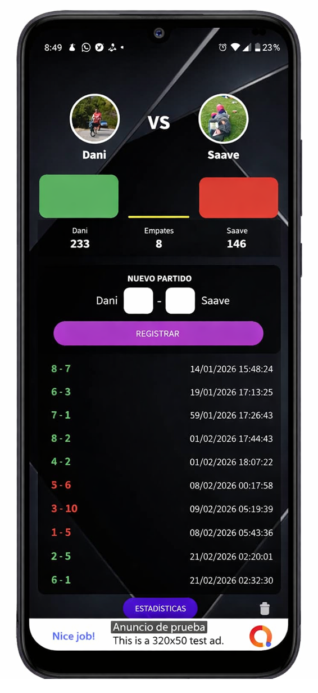

Rival Score es la app ideal para crear historiales entre amigos y registrar partidos de manera fácil.
- Agregá a tus rivales y cada vez que cargues un resultado, ellos reciben una notificación inmediata.
- El historial se actualiza en tiempo real y muestra quién domina la rivalidad.
- Las estadísticas destacan las mayores rachas de victorias, derrotas, invictos y las goleadas más recordadas.
- Podés sacar a relucir esa “paternidad” deportiva con datos claros y divertidos.
- Si preferís un control personal, también podés crear un historial local que solo vos ves y administrás, sin necesidad de registrarte.



Preguntas Frecuentes
¿Necesito registrarme? No, podés usar el historial local sin registro.
¿Mis rivales reciben notificaciones? Sí, cada vez que cargás un resultado ellos reciben un aviso inmediato.
¿Qué pasa si pierdo conexión? Los resultados se guardan y se sincronizan cuando vuelvas a estar online.
Estadísticas
Rival Score guarda y muestra:
- Mayores rachas de victorias y derrotas.
- Invictos prolongados.
- Las goleadas más recordadas.